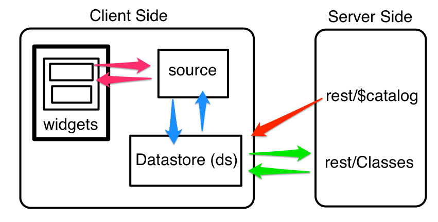

Getting the server-side out of the way

with WakandaDB
Programing Languages are for Humans
Clean Code
Good Code is Poetic Code
Lyle Troxell
Developer Advocate for wakandaDB
@lyle 


Chickens!

How do you think about..
Relational Data
SQL?
How I think about data...
How I think about data...
wakandaDB scheama
{"dataClasses": [
{ "name": "Chicken",
"className": "Chicken",
"collectionName": "Chickens",
"scope": "public",
"attributes": [
{ "name": "ID",
"kind": "storage",
"scope": "public",
"unique": true,
"autosequence": true,
"type": "long",
"primKey": true
},
{ "name": "name",
"kind": "storage",
"scope": "public",
"type": "string"
},
{ "name": "hatchDate",
"kind": "storage",
"scope": "public",
"type": "date",
"simpleDate": false
}
}
]
}
]}Wakanda
Wakanda Application Framework
Wakanda Studio
WakandaDB
Wakanda Application Framework
Wakanda Studio
- Data Modeler -> JSON
- IDE
- Start/Stop wakandaDB
wakandaDB
Database
Object-Relational
JavaScript Objects
Indexed
Transactional
Web Server